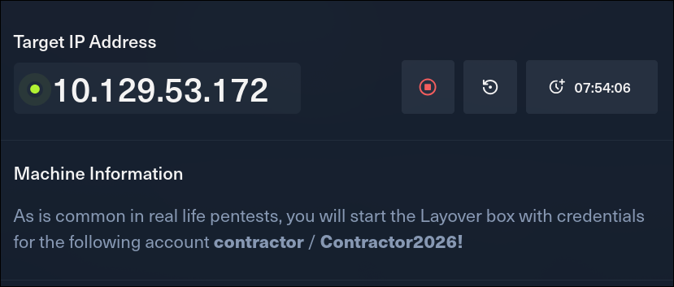
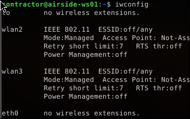
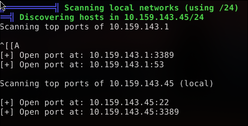

In this article I'll be walking you through how to pawn the Layover machine on HackTheBox(HTB).
Information about Layover Machine:
This box will require teaches you a lot from Linux Privilege Escalation techniques to Network Pentesting and Wireless Attacks. Having prerequisite knowledge in either will make your job easier and help you get root quicker.
After launching the machine. We are given the following credentials as a start

Username: contractor | Password : Contractor2026!
The first logical thing is to look for exposed ports on the target machine. I used the nmap with the sequence `nmap -sC -sV –top-ports 100 10.129.xxx.xxx` which returned the following ports
🛈 We are not permitted SSH access with the credentials given so we have to use RDP. Trying that gives us a remote connection into the host machine (airside-ws01).
There is no user flag in the home directory or anywhere I can look so the next logical step is to find a way to escalate privileges to root. I run a linpeas script from my local machine to get information that may be helpful.
Since we have network interfaces present, we could potentially connect to an available Wireless Network.

The script also probes for other targets on the same network as our eth0 interface and successfully finds one.

Probing for WiFi networks with nmcli returns us with one unsecured HTB International WiFi which we can simply connect to as it requires no password.
A new tab is opened in a browser showing the company website at *portal.international.htb”. A login page located at `/miles` allows anyone to login with any gibberish credentials.
Since we don't have access to our machine box, we can't intercept requests to the application, so we have to improvise.
Among the binaries discovered earlier, I found these interesting:
Combined with the additional interface wlan3. We can potentially monitor ALL traffic on the network.
Step 1:
Put the interface in monitor mode using airmon-ng. Finally makes sense why the author gave us root access!
(Note: Killing the wpa_supplicant process will disconnect you from the network)
Step 2:
Monitor Traffic with wireshar/ktshark/tcpdump:
From there on you should be able to intercept POST requests to the server and find a vulnerability in the web application which can be exploited to give you a shell.